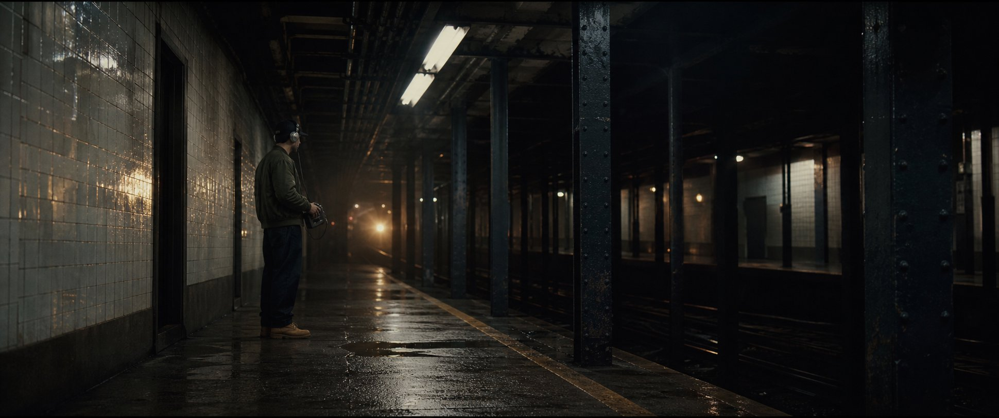

РИТМ МОНТАЖА
Музыки и реплик в сцене нет. На 00:15 — щелчок STOP; затем четыре коротких повтора металлического удара с интервалом около 0,65 с подготавливают вступление 92 BPM в следующей сцене.
До того, как родится бит, город уже играет. Rusty Needle ловит ритм проходящего состава на кассету — без реплик и музыки, только метро, механика и короткий щелчок STOP.

Подготовил prompt и референсы для image-to-video по сцене 01. Публичной документации на API OmniFlash.net не нашёл, поэтому не вызываю скрытые endpoints и ничего не отправляю автоматически: откроется сайт, а кадр и промпт вы передадите сами.
Рекомендуемый порядок: скачайте кадр-сцену, откройте OmniFlash, загрузите его как reference image, вставьте prompt и выберите landscape. Лист Rusty — дополнительный референс, если сайт позволяет добавить второе изображение. Перед загрузкой проверьте правила сервиса и условия использования ваших файлов.
Нажмите на кадр, чтобы перейти к соответствующей точке аниматика.
Музыки и реплик в сцене нет. На 00:15 — щелчок STOP; затем четыре коротких повтора металлического удара с интервалом около 0,65 с подготавливают вступление 92 BPM в следующей сцене.
Кадры — концепт-иллюстрации; наезд, вибрация, световые перебивки и монтажный ритм здесь показаны как режиссёрский аниматик, а не финальные live-action кадры.
Сцена предполагает закрытую декорацию или согласованную платформу. Актёр и оператор остаются за защитной линией; поезд и движение состава снимаются отдельно или создаются композитингом.